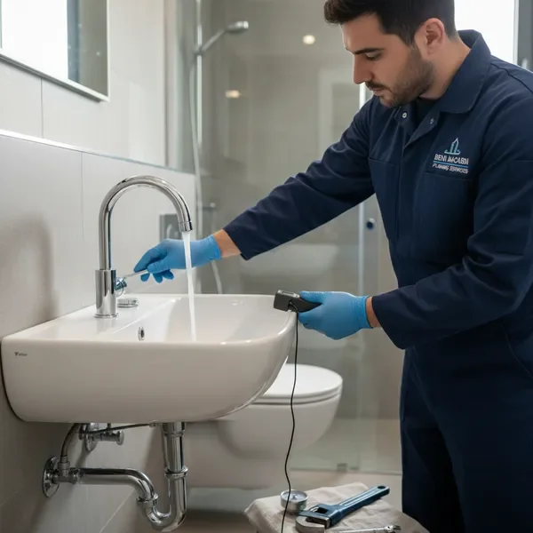
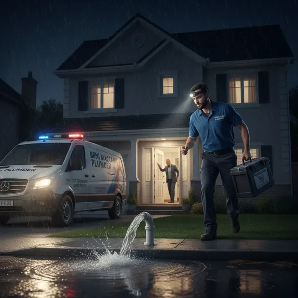
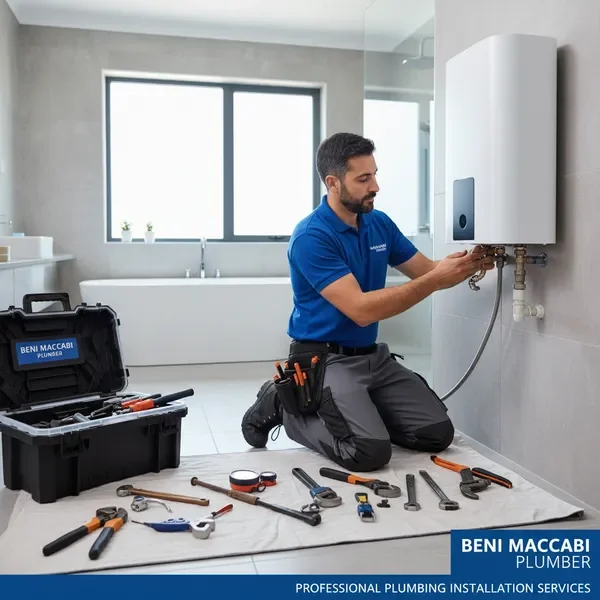
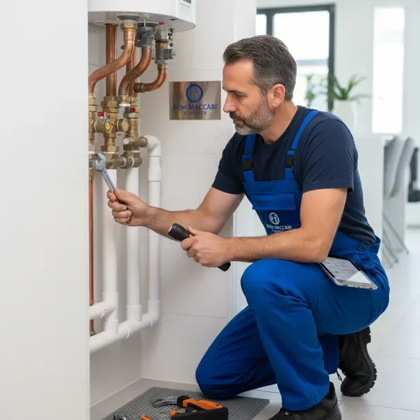
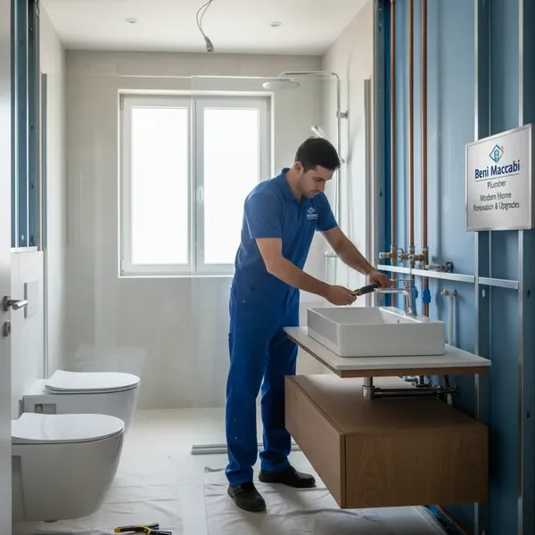

רכשת דירה חדשה? אנחנו מבינים שזה רגע מרגש ומשמעותי בחייך. כאינסטלטור לדירה חדשה, אנחנו מספקים שירות מקצועי ומקיף שמבטיח שמערכות האינסטלציה בביתך החדש יהיו במצב מושלם עוד לפני שאתה נכנס.
השירות שלנו כולל בדיקה יסודית של כל מערכות האינסטלציה בדירה: צנרת מים, ביוב, חימום וכל נקודות החיבור. אנחנו מזהים בעיות פוטנציאליות לפני שהן הופכות לתקלות יקרות, ומבצעים תיקונים והתאמות נדרשות כדי להבטיח שהכל עובד בצורה מיטבית.
בני מכבי אינסטלטור עובד עם זוגות צעירים ומשפחות רבות שרכשו דירות חדשות. אנחנו מספקים שירות אישי ומקצועי, מסבירים בדיוק מה נדרש ומה המצב של מערכות האינסטלציה בדירה. השקט הנפשי שלך חשוב לנו, ואנחנו מבטיחים שתוכל להתחיל את החיים בבית החדש שלך ללא דאגות.

עסקים מסחריים כמו מסעדות, בתי קפה וחנויות זקוקים לאינסטלטור מומלץ לעסקים שמבין את הצרכים הייחודיים שלהם. אנחנו יודעים שכל דקה של השבתה עולה לך כסף, ולכן אנחנו מספקים שירות מהיר, יעיל ומקצועי שמאפשר לעסק שלך להמשיך לפעול ללא הפרעות.
השירותים שלנו לעסקים כוללים תיקון תקלות דחופות, תחזוקה שוטפת של מערכות אינסטלציה, התקנת ציוד חדש ושדרוג מערכות קיימות. אנחנו עובדים בשעות שמתאימות לך - גם מחוץ לשעות הפעילות של העסק כדי למזער הפרעות ללקוחות שלך.
עם ניסיון רב בעבודה עם עסקים מסחריים, אנחנו מכירים את הדרישות הגבוהות של התחום. בני מכבי אינסטלטור מספק פתרונות מותאמים אישית, תמחור שקוף והוגן, וזמינות מלאה כדי להבטיח שהעסק שלך יוכל להמשיך לפעול בצורה חלקה.
תקלות אינסטלציה לא מחכות לשעות נוחות. נזילה בצינור, סתימה חמורה או תקלה במערכת החימום יכולים להתרחש בכל שעה ביממה. לכן אנחנו מספקים שירותי אינסטלציה חירום 24/7 - זמינים מסביב לשעון, שבעה ימים בשבוע, כולל שבתות וחגים.
כשאתה מתקשר אלינו עם בעיה דחופה, אנחנו מגיבים במהירות. הצוות המקצועי שלנו מגיע לאתר עם כל הציוד והכלים הנדרשים, מאבחן את הבעיה ומספק פתרון מיידי. אנחנו מבינים שתקלות אינסטלציה יכולות לגרום נזק רציני לרכוש ולשבש את שגרת החיים, ולכן אנחנו עושים הכל כדי לפתור את הבעיה במהירות וביעילות.
השירות שלנו כולל טיפול בנזילות מים, פתיחת סתימות, תיקון ברזים ואסלות, תקלות במערכות חימום ועוד. בני מכבי אינסטלטור מחויב לספק לך שירות אמין ומקצועי בכל עת, כך שתוכל לישון בשקט בידיעה שיש למי לפנות בזמן חירום.


התקנה ותחזוקה של דודי חשמל, דודי שמש ומערכות חימום מים. אנחנו מבטיחים התקנה מקצועית ובטוחה שתספק לך מים חמים באופן אמין.
תיקון והחלפה של ברזים, אסלות, כיורים ואביזרי אינסטלציה נוספים. אנחנו עובדים עם מותגים מובילים ומבטיחים איכות גבוהה.

תוכניות תחזוקה מונעת למערכות אינסטלציה במבנים מגורים ומסחריים. תחזוקה קבועה חוסכת כסף ומונעת תקלות עתידיות.

שיפוץ מלא של מערכות אינסטלציה במסגרת פרויקטי שיפוץ כלליים. אנחנו מתכננים ומבצעים שדרוג מקיף של כל מערכות האינסטלציה בבית או בעסק.
צור קשר עכשיו לקבלת ייעוץ חינם והצעת מחיר. נשמח לעזור לך עם כל צורך אינסטלציה.
צור קשר עכשיו